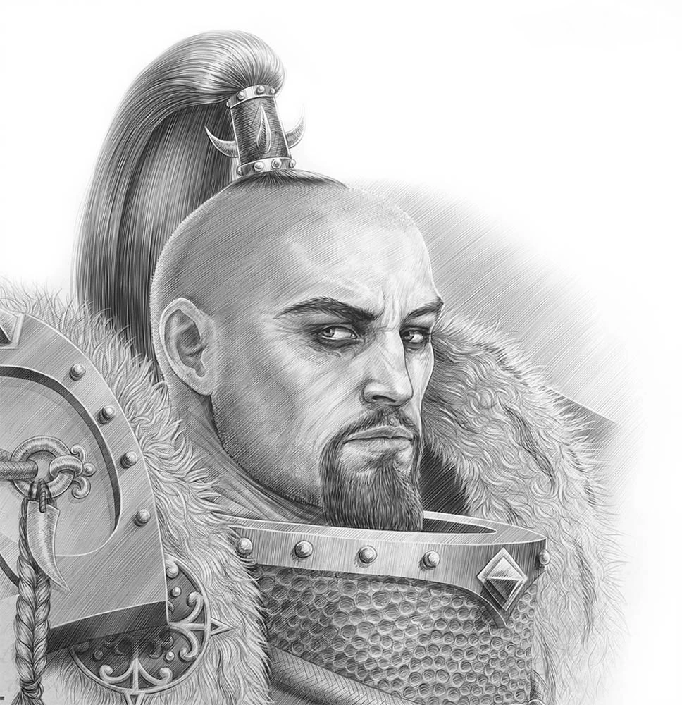

Jaghatai Khan es el Primarca desaparecido de la Legión de Marines Espaciales de los Cicatrices Blancas. Desapareció junto con toda la 1ª Hermandad de los Cicatrices Blancas mientras perseguía a una Kábala de Drukhari cerca de la Fisura Disforme conocida como el Torbellino El Apócrifo de Skaros habla muy poco de los Cicatrices Blancas y, cuando los menciona, la información está exagerada debido al hecho de que todo lo que se dice en él proviene de los propios Cicatrices Blancas. Existe una leyenda que cuenta cómo el joven Primarca partió solo de Terra para explorar la galaxia por su cuenta, mientras que otra explica que fue raptado cuando era un bebé. Es probable que la verdad se encuentre en algún punto intermedio.
